This guide builds the two Handoff devices. The AI bodycam is your Pixel 9 Pro in a 3D-printed case on a chest harness. The vitals relay is your Raspberry Pi 4 in a printed box with a finger sensor, a small screen and a MARK button.
Work through the stages in order. Each one ends with a checkpoint: what you should see, and what to do if you don't. Nothing needs soldering.
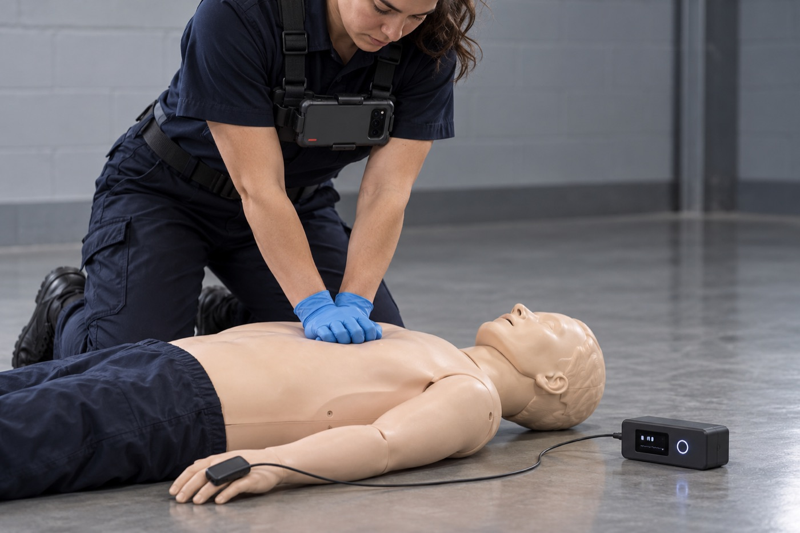
HackUTD's 2025 rules said "no coding or building before noon on Saturday". The 2026 rules aren't posted yet. Get the organizers' answer before you assemble hardware or run these scripts ahead of the event. Everything here assembles in about an hour, so you can also do Stages 4–9 at the venue if you have to.
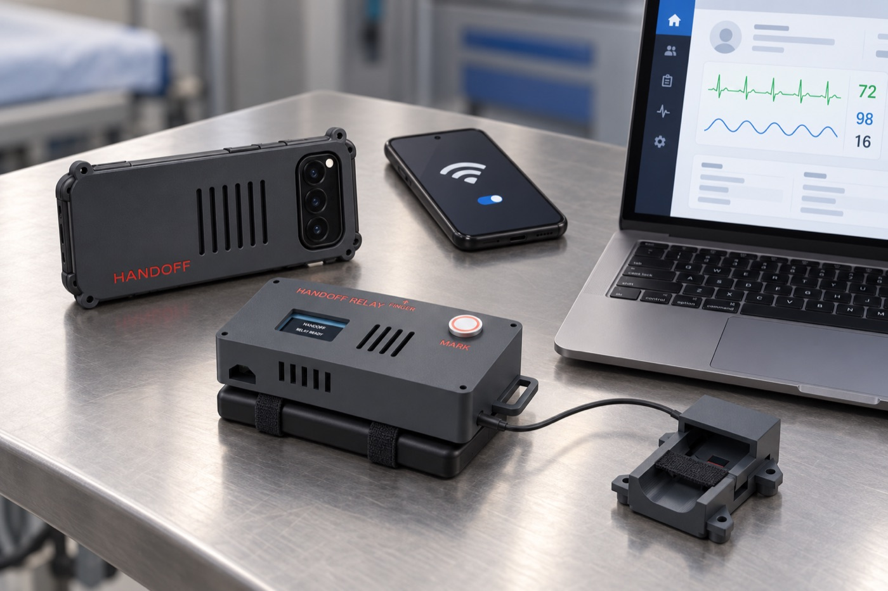
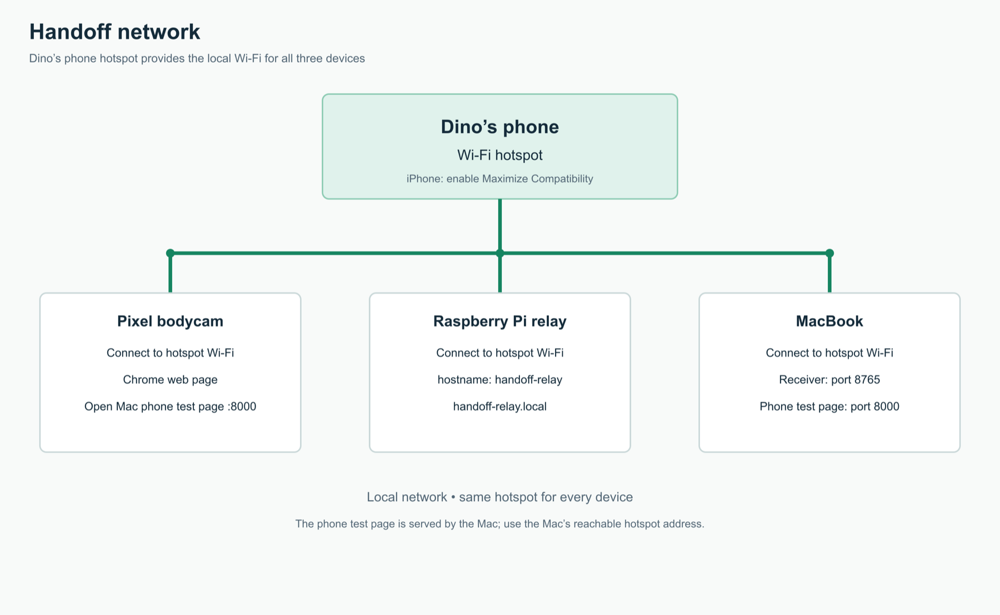
The bodycam case comes in two versions. Rear mode is preferred: the screen faces your chest and the rear ultra-wide camera (123°) looks out. Chrome doesn't always let web pages use the ultra-wide lens, though. If it can't, you print front mode, where the screen faces out and the 103° front camera films.
This test decides which one to print, so do it before you print the case.
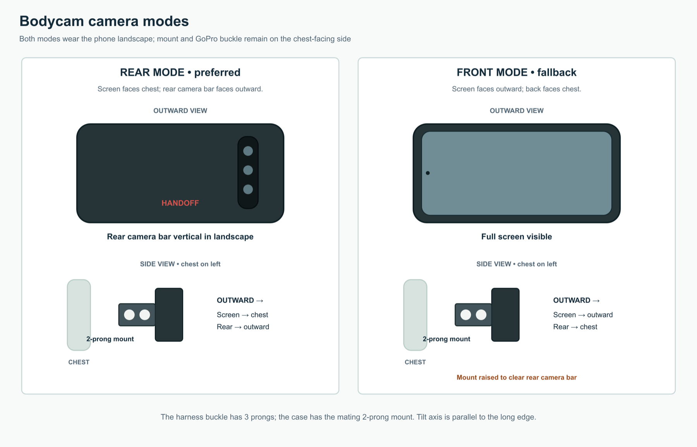
Put the Mac and the Pixel on the same Wi-Fi network (home Wi-Fi or Dino's hotspot).
On the Mac, open Terminal and start the test page server:
cd ~/Documents/Hackathons/HackUTD-2026/hardware bash software/mac/serve_phone_test.sh
It prints the address to open on the phone, such as http://172.20.10.4:8000/.
The camera only works on a "secure" page, so tell Chrome to trust this one. On the Pixel, open Chrome and go to:
chrome://flags/#unsafely-treat-insecure-origin-as-secure
Set it to Enabled, type the exact origin the script printed (for example http://172.20.10.4:8000), and tap Relaunch. Redo this whenever the Mac's address changes.
Open the address. The chips along the top should all be green, starting with ✓ Secure context.
Open the Camera tab, tap Allow camera, then Scan all cameras. Read the verdict box.
| Verdict | What it means | |
|---|---|---|
REAR MODE - ultra-wide reachable | A rear camera zooms out to about 0.5×. Open it, tap Min (widest), and check the picture really widens. | Rear set |
MAYBE REAR - check by eye | Several rear cameras, none reporting zoom below 1×. Open each one; if one is clearly wider, tap This is the ultra-wide. | Rear set if one is clearly wider |
FRONT MODE | Only the main rear camera is reachable. | Front set |
| If you see | Do this |
|---|---|
| "This site can't be reached" | Phone and Mac are on different networks, or the Mac's firewall blocks Python. Allow it in System Settings → Network → Firewall. |
Red ✗ Secure context | The flag isn't set for the exact origin, or Chrome wasn't relaunched. |
NotAllowedError | Tap the icon left of the address bar → Permissions → Camera → Allow. |
Zoom column says not reported | Allow the zoom permission and scan again. |
Write down the verdict. Every other test on this page is in software/README.md section 7.
Google doesn't publish the camera bar's exact size, so the case uses estimates you can correct. Two small test prints catch any problem before you spend 5 hours printing the full case.
Take any case off the phone. Measure these with the phone held upright (portrait), and compare with the defaults:
| Measure | Variable in cad/common.scad | Default |
|---|---|---|
| Camera bar width (side to side) | camera_bar_w | 61 mm |
| Camera bar height (top to bottom) | camera_bar_h | 19 mm |
| Phone's top edge to the top of the bar | camera_bar_top | 9.5 mm |
| How far the bar sticks out from the back | camera_bar_protrusion | 3.6 mm |
| Corner radius (compare against the fit ring) | phone_r | 9.5 mm |
If any number is more than 0.5 mm off, edit it in cad/common.scad, then regenerate every STL and re-run all the fit checks with one command:
cd ~/Documents/Hackathons/HackUTD-2026/hardware cad/.venv/bin/python cad/verify.py
It should end with every check passing. If it exits with an error, undo the last change.
Print the two test pieces (settings in Stage 3):
cad/stl/p1_mount_test.stl: about 25 minutescad/stl/p1_rear_fit_ring.stl or p1_front_fit_ring.stl, matching your Stage 1 verdict: about 12 minutes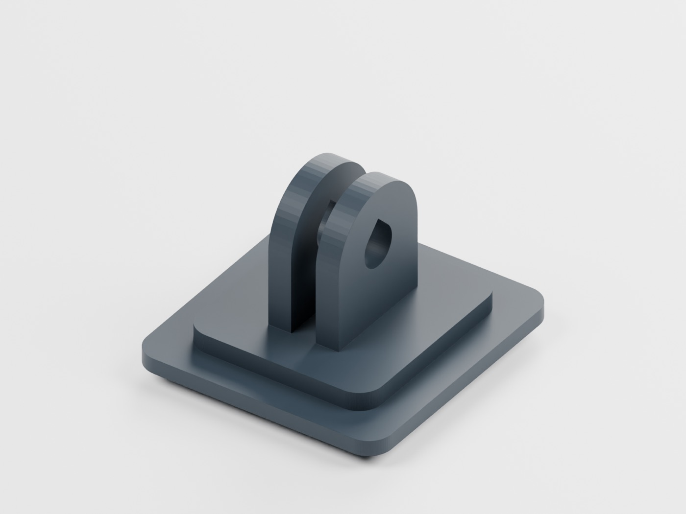
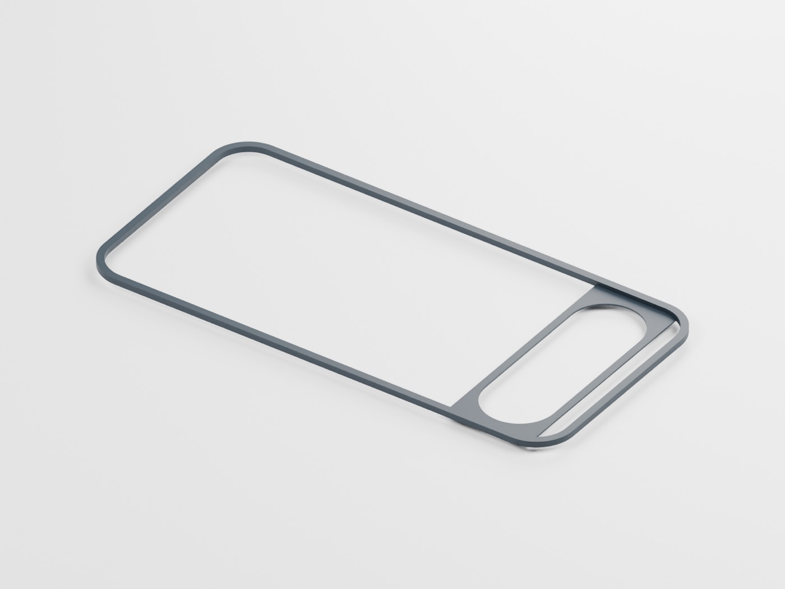
Slide the mount test's two fingers between the buckle's three prongs. Push the harness thumbscrew through and tighten it by hand. Then lay the phone in the fit ring. For the rear ring, lay the gauge against the phone's back to see where the camera bar falls.
| If you see | Change in cad/common.scad, then re-run verify.py |
|---|---|
| Fingers too tight in the buckle | Lower gopro_finger by 0.1–0.2 mm (default 3.0) |
| Fingers loose or wobbly | Raise gopro_finger by 0.1 mm |
| Thumbscrew won't go through | Raise gopro_hole by 0.2 mm (default 5.2) |
| Phone tight in the ring | Raise phone_clearance by 0.1 mm (default 0.4) |
| Camera bar off-centre in the gauge | Adjust camera_bar_top, camera_bar_side_offset, camera_bar_w or camera_bar_h |
Reprint the test piece after any change. Don't force a part to fit.
Every STL is already turned the right way for the bed. Don't auto-orient or scale them: scaling changes the screw and mount fits. Print only the case set that matches your Stage 1 verdict.
| General setting | Value |
|---|---|
| Nozzle / layer height | 0.4 mm / 0.20 mm (first layer 0.20 mm) |
| Top and bottom layers | 6 |
| Infill pattern | Gyroid (rectilinear at 100% for the mount test) |
| Supports | None for every part |
| Material | PETG for the case and relay box (PLA softens near a warm Pi). Opaque black PETG or PLA for the finger clip. |
| Temperatures | Your filament maker's PETG/PLA profile |
| Part | STL in cad/stl/ | Walls | Infill | Brim | Filament | Time |
|---|---|---|---|---|---|---|
| Bodycam outer shell | p1_rear_front_frame.stlor p1_front_front_frame.stl | 5 | 25% | 3 mm | 30–36 g | 2.0–2.3 h |
| Bodycam chest plate | p1_rear_back_plate.stlor p1_front_back_plate.stl | 6 | 30% | 3 mm | 30–35 g | 1.9–2.2 h |
| Relay box base | p2_base.stl | 5 | 20% | 5 mm | 94–111 g | 6.1–7.2 h |
| Relay box lid | p2_lid.stl | 5 | 25% | 3 mm | 33–38 g | 2.1–2.5 h |
| Screen retainer | p2_oled_retainer.stl | 5 | 30% | 0 | 4 g | 15 min |
| Finger clip tray | p3_tray.stl | 4 | 25% | 3 mm | 4–5 g | 20 min |
| Finger clip cradle | p3_hood.stl | 4 | 25% | 5 mm | 15–18 g | 1.0–1.2 h |
Times and weights are planning estimates calculated from part volume; no slicer was used. Your slicer's numbers win. Full details are in cad/PRINT_SETTINGS.md.
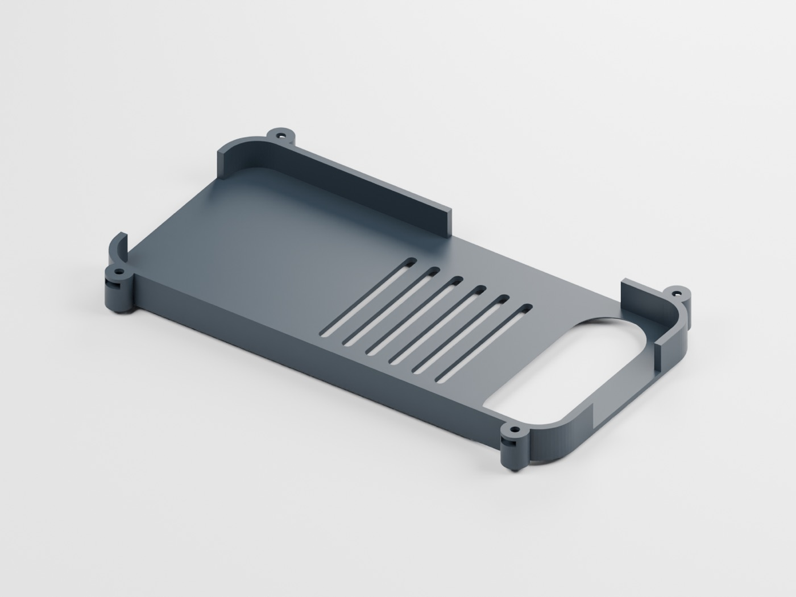
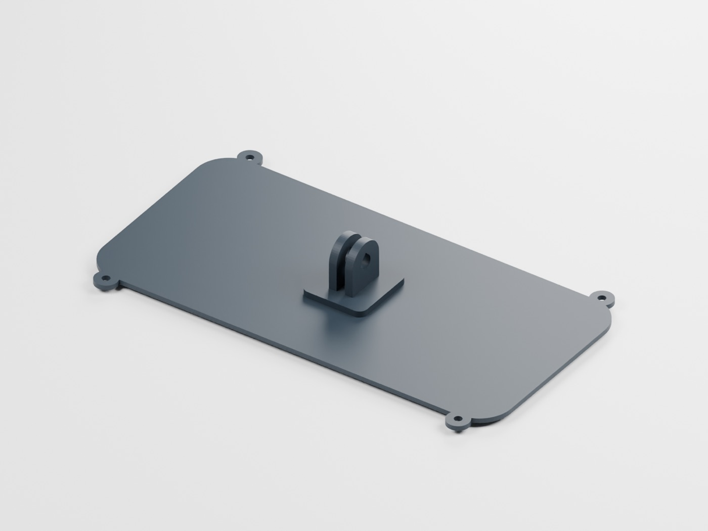
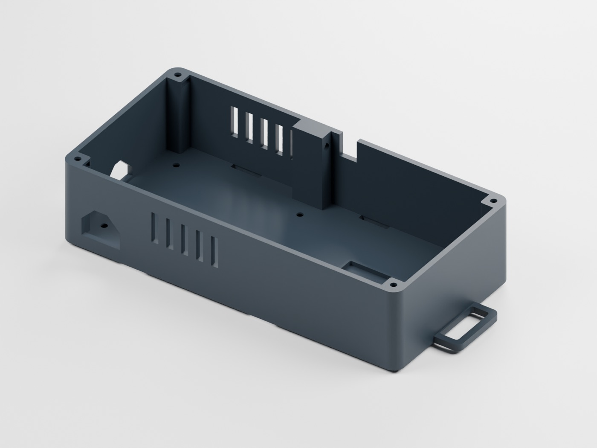
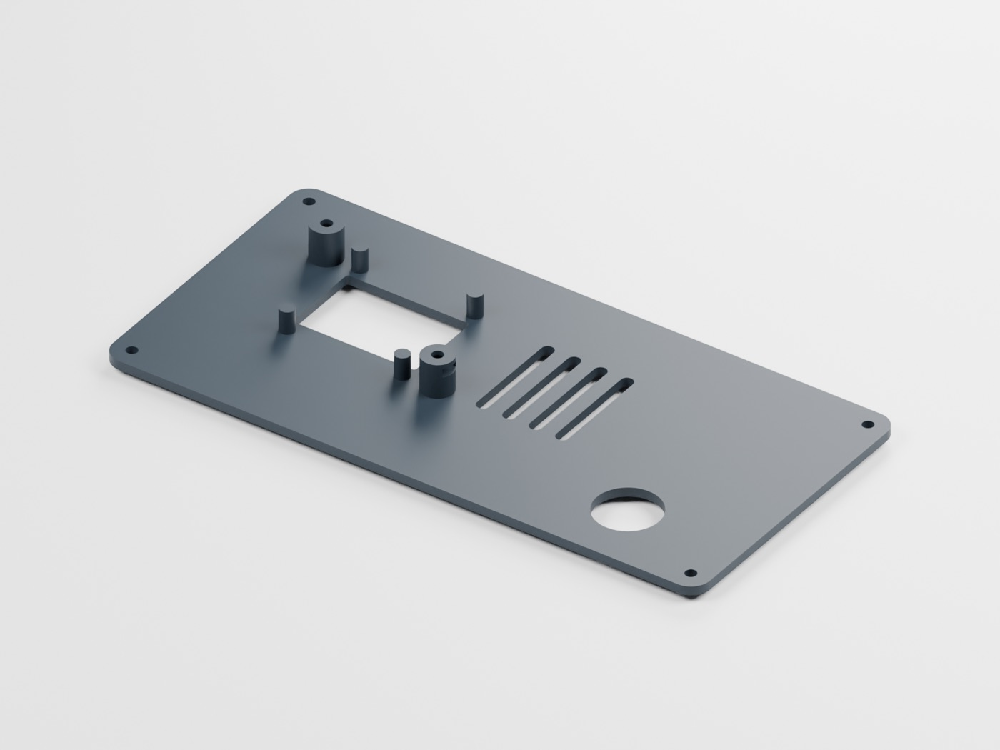
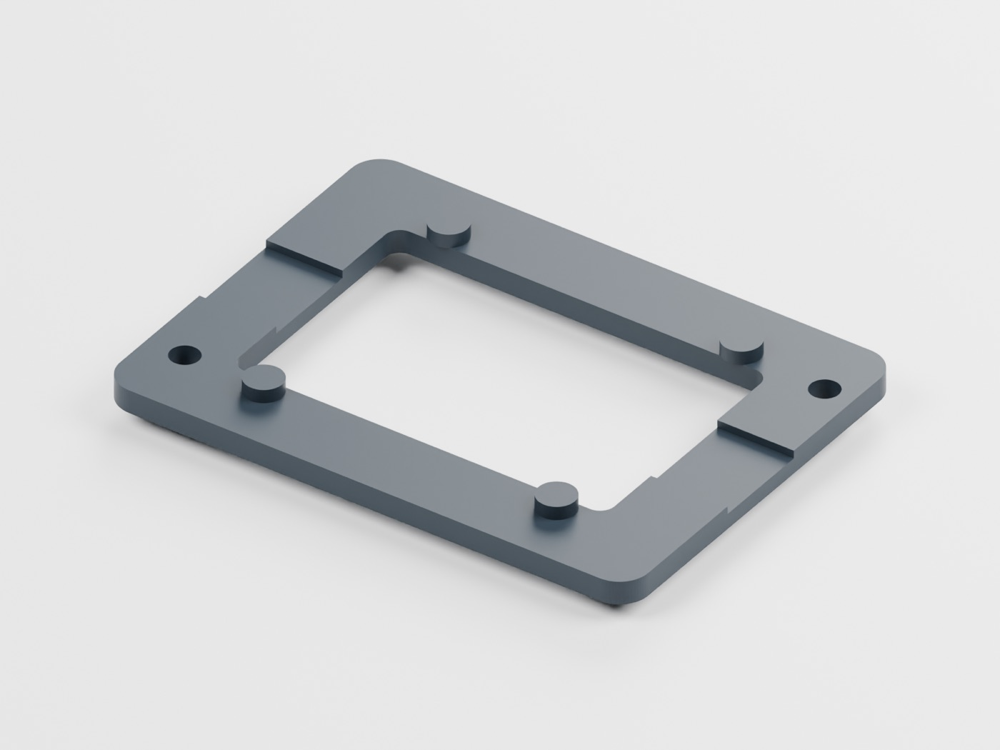
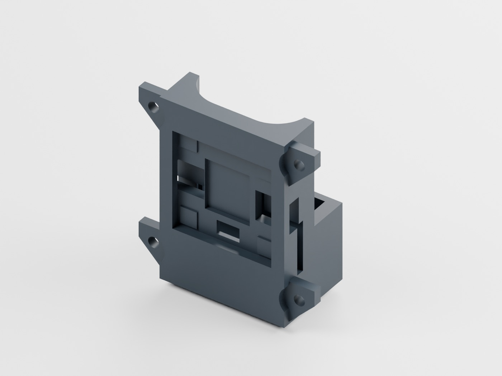
Clean up. Remove brims, clear stringing from every hole and opening, and deburr any edge that touches the phone or a finger.
Load the nuts. Most nuts slide sideways into a slot, so a thin printed wall sits between the nut and the screw head. That wall is what lets the screw clamp the parts together. Load them now:
Each nut should sit square and centred over its screw hole. If a slot is tight, clear it with a hobby knife rather than forcing the nut.
Optional: fill the labels. Run a red paint pen into the recessed HANDOFF, HANDOFF RELAY, MARK and FINGER lettering and wipe the surface.
Install Raspberry Pi Imager on the Mac (brew install --cask raspberry-pi-imager). Choose Raspberry Pi 4, then Raspberry Pi OS (other) → Raspberry Pi OS Lite (64-bit), then your microSD card. When it asks about OS customisation, choose Edit settings:
| Setting | Value |
|---|---|
| Hostname | handoff-relay |
| Username / password | handoff / a password the team knows |
| Wi-Fi | Dino's hotspot name and password, typed exactly |
| Wireless LAN country | US (Wi-Fi stays off without it) |
| Services | Enable SSH with password authentication |
Before flashing: if Dino's hotspot name has a curly apostrophe (like "Dino’s iPhone"), rename the phone to something plain such as dino-hotspot. On an iPhone, turn on Maximize Compatibility in Personal Hotspot.
Put the card in the Pi, turn the hotspot on, and power the Pi with its official supply. The first boot takes 2–3 minutes. Join the Mac to the same hotspot, then:
ssh handoff@handoff-relay.local
Answer yes to the fingerprint question and enter the password. You should get a prompt like handoff@handoff-relay:~ $.
In a second Terminal tab on the Mac, copy the test scripts to the Pi:
cd ~/Documents/Hackathons/HackUTD-2026/hardware/software rsync -av --exclude __pycache__ pi/ handoff@handoff-relay.local:~/handoff-pi/
Back in the SSH tab, run the setup. It installs the libraries, turns on I2C and makes a Python environment. It's safe to run again.
cd ~/handoff-pi bash setup_pi.sh
If it says to reboot or log out, do that and SSH in again. From now on, every time you SSH in, start with:
source ~/handoff-venv/bin/activate cd ~/handoff-pi
Run the self-test and the health check:
python3 -m lib.selftest python3 health_check.py
21/21 checks passed ... CPU temp : 47.2 C OK Power/clock : throttled=0x0 OK - no under-voltage or throttling since boot Wi-Fi : connected to "dino-hotspot", signal 71% I2C bus 1 : none PROBLEM <- expected until Stage 5
| If you see | Do this |
|---|---|
Could not resolve hostname handoff-relay.local | Wait 2 more minutes. Or find the Pi's address in the hotspot's device list and use ssh handoff@172.20.10.x. |
Connection refused | SSH wasn't enabled in Imager. Re-flash with SSH on. |
| Pi never appears on the hotspot | Wi-Fi name or password typo, or no Wi-Fi country. Re-flash. |
FAILED (line N). Is the Pi online? | The hotspot has no data. Check ping -c 3 pypi.org and re-run. |
Any FAIL in the self-test | The copy was damaged. Re-run the rsync. |
under-voltage | Use the official 5.1 V supply for bench work. |
To add your home Wi-Fi for bench work, see software/README.md section 4.
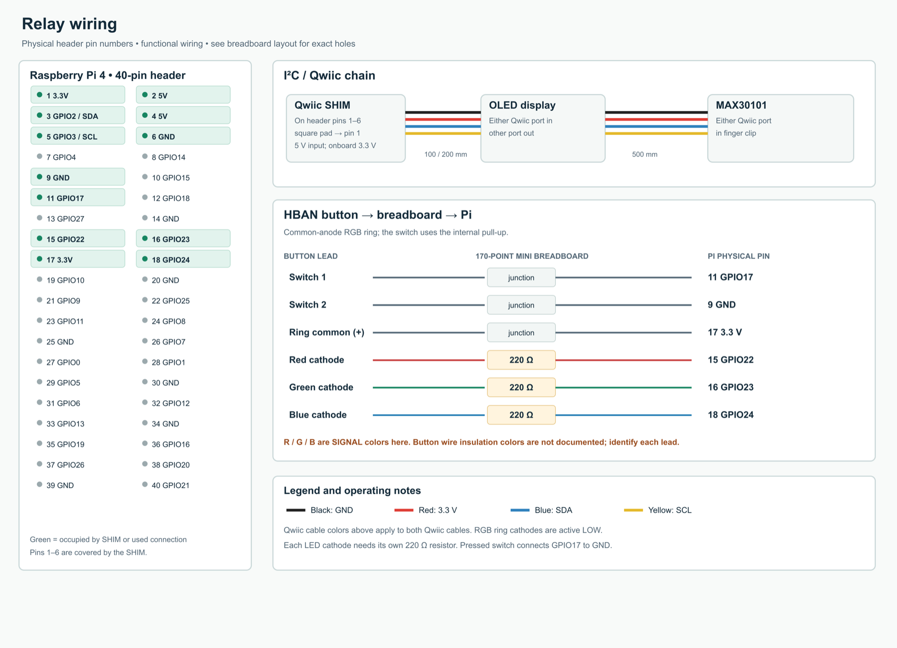
Turn the Pi off and unplug it. Wipe the chips with a dry tissue, peel the heatsink backing and press the largest heatsink onto the main processor (the large metal-topped chip near the centre), the others onto the memory and USB chips. Keep them within 12 mm of the board; the box is built for that.
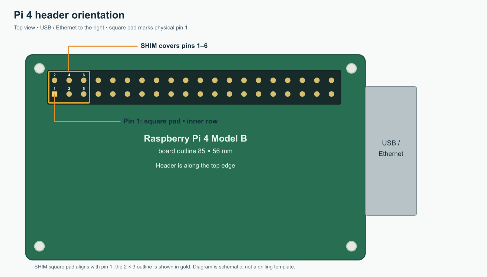
Press the Qwiic SHIM down onto header pins 1–6, with its square pad over the Pi's pin 1. Push it all the way down to the base of the pins.
Check it twice: it should cover exactly the first three pairs of pins, with no pins showing between it and the corner.
Click a short Qwiic cable from the SHIM into either socket on the OLED. Click the 500 mm cable into the OLED's other socket and into either socket on the MAX30101. The plugs only fit one way and click when seated.
Power the Pi, SSH in, activate the environment, and run:
python3 i2c_scan.py python3 test_oled.py python3 test_max30101.py --oled
For the sensor test, keep your finger off for the first 2 seconds (it measures the room). When asked, rest your fingertip pad lightly on the small window near the board's top edge, and keep still.
Found 2 device(s): 0x3D OLED screen, SSD1306 (default address) 0x57 MAX30101 pulse sensor (finger clip) RESULT: OK - sensor and OLED both answer.
test_oled.py: the screen shows HANDOFF RELAY, a fake heart rate and a moving wave for 10 seconds, at 5–15 frames per second. 0x3C instead of 0x3D is also fine.test_max30101.py: PART_ID 0x15; the finger column flips to YES within a second of touching; the OLED status goes from wait to pulse and the terminal shows a heart rate 4–6 seconds later, matching your pulse within about 5 bpm (count at your wrist for 15 seconds, times 4); 0 lost. Lift the finger and HR goes back to --: readings never outlive the pulse. SpO2 is marked experimental and isn't a medical reading.| If you see | Do this |
|---|---|
Nothing answered on I2C bus 1. | SHIM not fully pressed down, on the wrong pins, or not lined up with pin 1. Power off and reseat it. |
MAX30101 missing but the OLED answers | Reseat the 500 mm cable at both ends until they click. |
| Screen picture shifted with a noise band | Your screen uses the SH1106 chip: put HANDOFF_OLED_DRIVER=sh1106 in front of each command. |
Finger stays no | Finger not over the window, or LEDs too dim: add --led-ma 12. |
Finger YES but no heart rate | Keep still, press lighter, warm a cold finger. |
SAT in the finger column | Too much light: add --led-ma 3. |
The button's six wires end in a plug that clips onto the button's back and can be unplugged. The wires aren't labelled. Two go to the switch, one to the ring's common +, and one each to red, green and blue. Follow each wire to its pin on the button's back if the pins are marked. If they aren't, the helper script finds them using one 220 Ω resistor and two jumpers, and can't short anything:
python3 identify_wires.py
Follow its prompts. Put a tape label on each wire as it tells you (SW, SW, +, R, G, B).
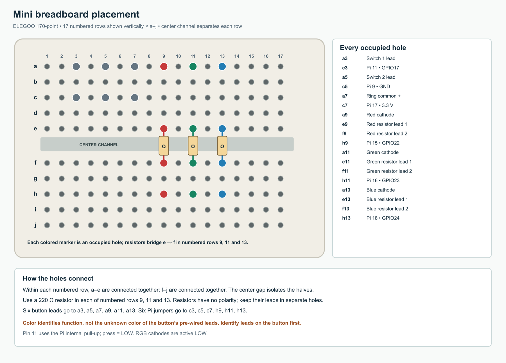
Pi off. Wire the breadboard exactly as shown. Keep it loose on the bench for now; you'll stick it in the box in Stage 6.
| Button wire | Hole | Through | Pi jumper hole | Pi pin (female end) |
|---|---|---|---|---|
| Switch 1 | a3 | row 3 | c3 | 11 (GPIO17) |
| Switch 2 | a5 | row 5 | c5 | 9 (GND) |
| Ring common + | a7 | row 7 | c7 | 17 (3.3 V) |
| Red | a9 | 220 Ω from e9 to f9 | h9 | 15 (GPIO22) |
| Green | a11 | 220 Ω from e11 to f11 | h11 | 16 (GPIO23) |
| Blue | a13 | 220 Ω from e13 to f13 | h13 | 18 (GPIO24) |
Use female-to-male jumpers: the female end on the Pi pin, the male end in the breadboard hole. If a stranded button wire won't stay in a hole, twist its strands tight first.
Power on and run:
python3 test_button.py
PRESS and turns the ring green, holding 1.5 seconds prints HOLD and turns it blue, releasing prints RELEASE after … s.| If you see | Do this |
|---|---|
| Green and blue much dimmer than red | Expected with 220 Ω. Add a second 220 Ω in parallel for each: side by side across the same rows, e.g. d11–g11 and d13–g13. That makes 110 Ω. Never a direct wire. |
| The wrong colour lights | Two colour wires swapped. Move them per identify_wires.py. |
| Ring stays lit after the script exits | Common wire on GND instead of pin 17, or the ring is common-cathode. Run identify_wires.py. |
the button reads PRESSED before you touch it | A switch wire is on the wrong pin. |
No PRESS lines | Switch wires aren't in rows 3 and 5, or the jumpers aren't on pins 11 and 9. |
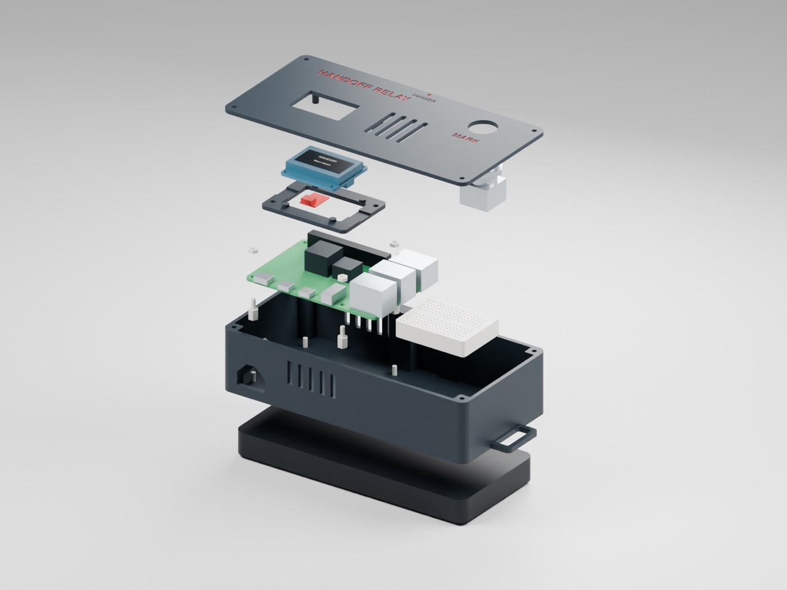
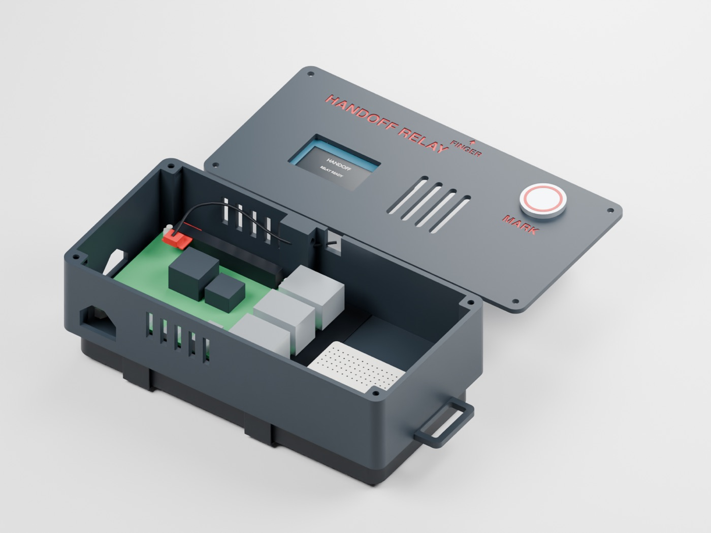
Unplug the power, both Qwiic cables and the six jumpers from the Pi. Leave the SHIM pressed onto pins 1–6. Check the four lid nuts are in the base's corner slots. Thread the two Velcro straps across the inside floor of the base, through the slots, before anything else goes in. They'll wrap around the power bank later.
Standoffs. Stand four 6 mm male-female standoffs on the four floor bosses, threaded stud up. From underneath, drive an M2.5×6 screw up through each counterbored hole into the standoff's female end. Hand-tighten only: the floor above the screw head is thin. Run a fingernail over the base's bottom: no screw head may stick out.
Pi. Lower the Pi onto the four studs, with its USB-C port facing the side opening, and put a nut on each stud on top of the board. Check the studs poke through far enough to take the full nut. If the screws bottom out in the standoffs before they're snug, see the fit notes in cad/README.md (P2).
Breadboard. Move your Stage 5 wiring across unchanged. Peel the breadboard's backing and press it into its pocket in the right-hand bay.
Screen. Try the OLED in the lid first: its glass should sit inside the four round pads without touching them. If a pad touches the glass, sand that pad lightly; never force it. Then lay the OLED glass-side down on the pads, place the retainer behind it with its raised pads toward the board, and fix it with two M2.5×6 screws into the nuts in the side slots of the lid posts. Finger-tight only: the retainer clamps the board edges, not the glass.
Button. Unplug the wire plug from the back of the button and take the nut off; the breadboard wiring stays as it is. Push the bare button through the 16 mm hole from the top, thread the nut on from below (finger-tight plus a quarter turn), then click the plug back onto the button.
Cables. Plug the short Qwiic cable between the SHIM and the OLED (through the retainer's opening), and the 500 mm cable into the OLED's other socket. Run the 500 mm cable out through the notch under the FINGER arrow and tie it to the anchor eye beside the notch with a small zip tie. Reconnect the six jumpers to the Pi pins from Stage 5.
Close. Lower the lid, checking no wire is pinched, and fix it with four M2.5×6 screws into the corner nuts.
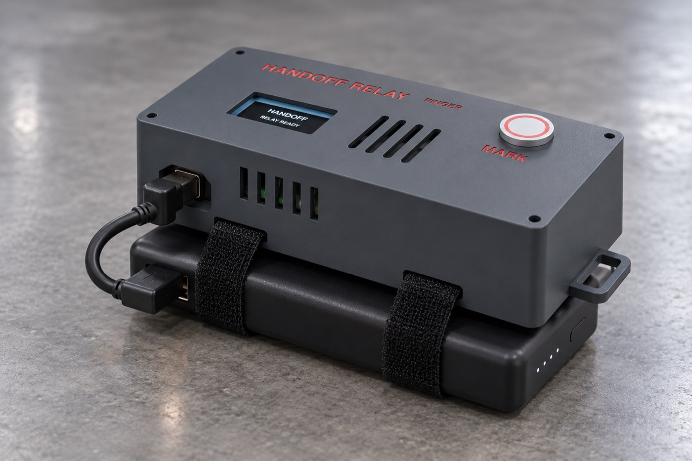
Power bank. Set the box on the power bank and wrap the two straps around it. Plug the right-angle cable into the bank's USB-A port and into the Pi's USB-C port through the side opening.
python3 health_check.py python3 i2c_scan.py python3 test_button.py
throttled=0x0, both I2C devices answer, the button and ring behave.python3 test_max30101.py --oled), then run health_check.py again: CPU temperature under 70 °C and still throttled=0x0.| If you see | Do this |
|---|---|
under-voltage on battery | Make sure you're using the short right-angle cable in the bank's USB-A port. Charge the bank. |
CPU temperature WARM or HOT | Check the heatsinks are stuck on and the vents aren't blocked. |
| The lid won't close | A cable or jumper is in the way. Reroute it; don't press the lid down onto it. |
| Box rocks on the bank | A screw head sticks out under the base. Re-seat it in its counterbore. |
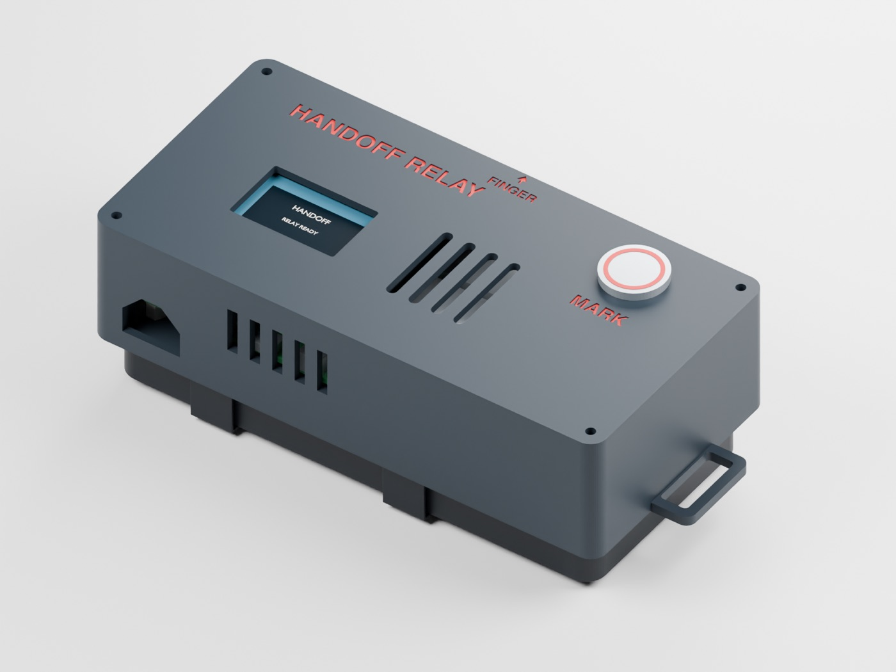
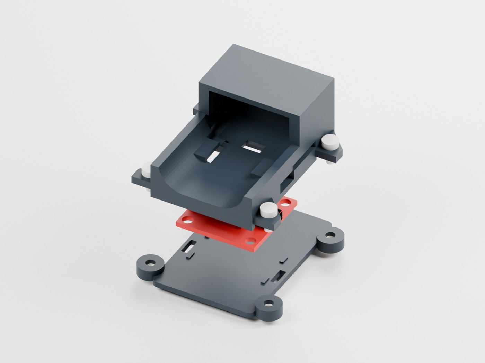
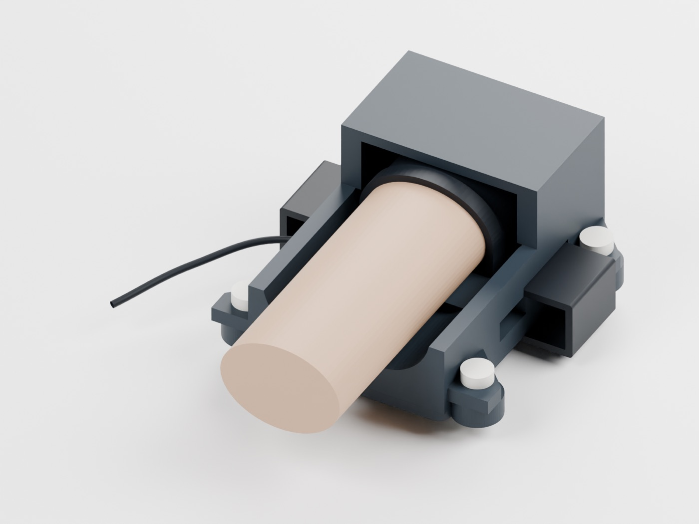
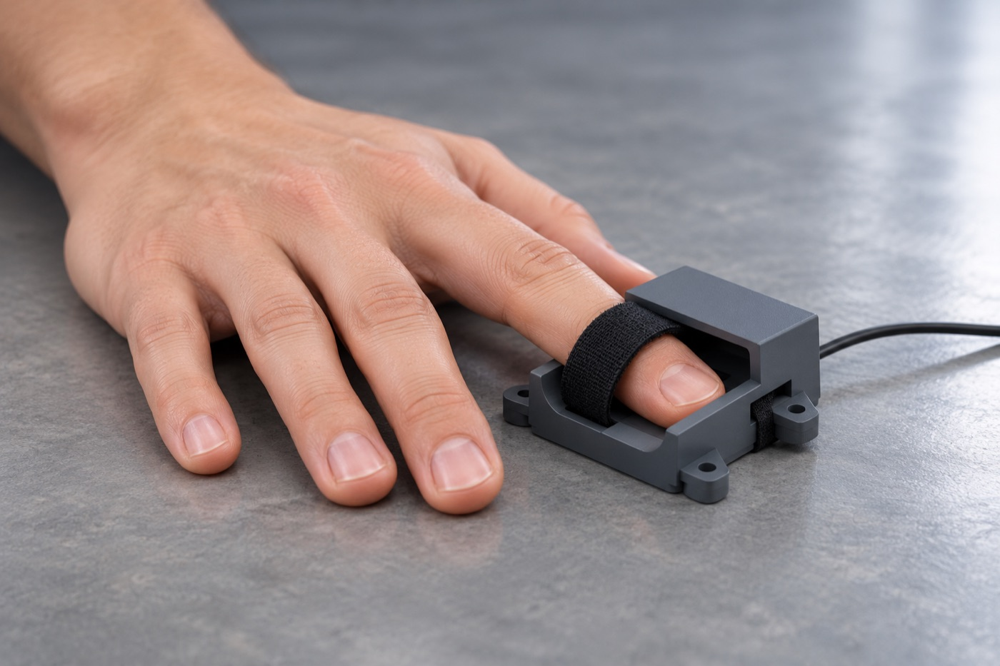
Check the four nuts are seated under the tray. Plug the 500 mm Qwiic cable into the sensor board first; the clip is hard to reach once it's closed.
Lay the board on the tray's seats sensor-side up, with the sensor window (near the board's top edge) toward the visor end.
Put the cradle on top and fix it with four M2.5×6 screws, gently and evenly. The corner pads hold the board; nothing presses on the sensor.
Look into the cradle: the sensor window sits flush with the floor. Cut thin strips of black electrical tape and seal the hairline gap around the window. Don't cover the window itself.
Thread the black Velcro strap through the two low slots in the cradle walls. It goes over the finger directly above the sensor, under the visor, and around under the tray. Never route it over the top of the visor.
Run the cable out through the tray's side slot and add a zip tie for strain relief, away from the strap.
Start the test with the clip empty. The sensor measures the room for its first 2 seconds, and a finger already in place would spoil that.
python3 test_max30101.py --oled
When it asks for your finger, slide a fingertip in, palm side down, until it touches the stop under the visor. Close the strap with light, even pressure, enough that the clip stays on a relaxed hand lying on the table.
YES, a heart rate appears within about 6 seconds, and it matches a 15-second wrist count times 4 within about 5 bpm.| If you see | Do this |
|---|---|
No heart rate, but finger YES | Strap too tight (it squeezes the blood out). Loosen it slightly and keep still. |
| Reading jumps when light changes | Seal the tape gap around the window better; check the strap covers the top of the finger. |
| Finger won't fit under the visor | Raise visor_clearance in cad/p3_finger_clip.scad (finger thickness + strap thickness + at least 0.8 mm), run cad/.venv/bin/python cad/verify.py, and reprint the cradle. |
| Finger slides around in the channel | Lower channel_flat_width and visor_clearance for a smaller finger, run verify.py and reprint; or add a thin black foam strip along the walls. |
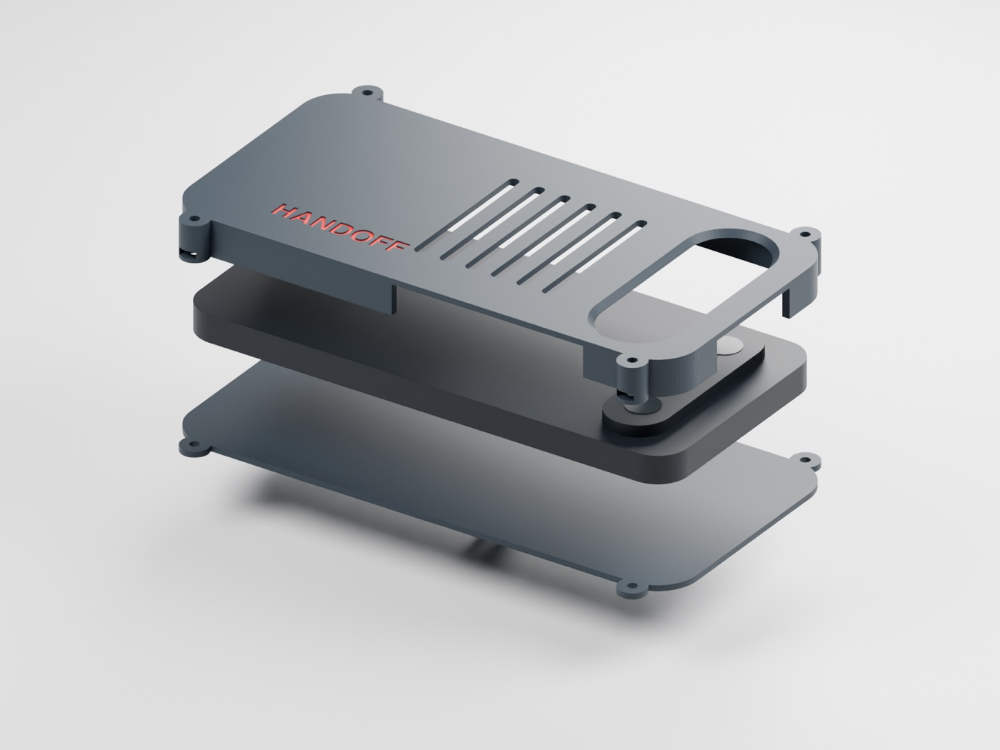
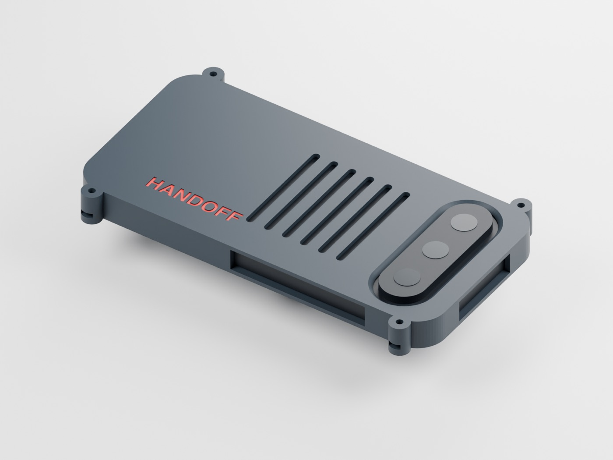
The four nuts should already be in the side slots of the outer shell's corner tabs (the piece with the HANDOFF lettering and vents).
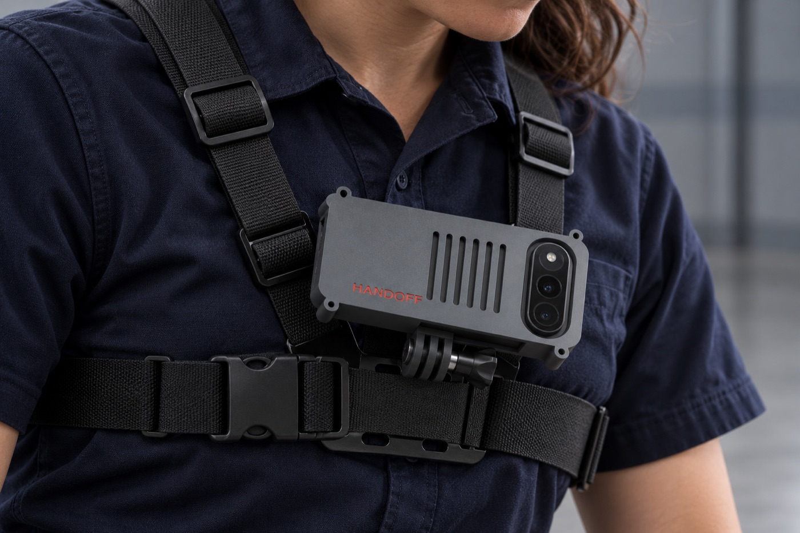
Put the harness on first, without the case. Adjust the shoulder and chest straps so the base sits flat on your sternum.
In rear mode you can't touch or see the screen once the case is closed. So the next two steps are short test passes that each start the phone first, then close the case with just two diagonal screws. The final close with all four screws comes last.
Test pass A: framing and voice.
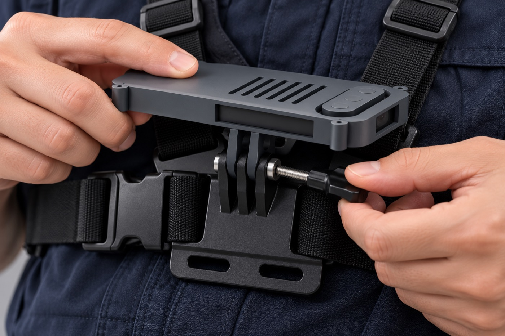
Slide the case's two fingers between the buckle's three prongs, push the thumbscrew through, tilt the case about 15° downward so it looks at the patient instead of the horizon, and tighten the thumbscrew firmly by hand. Slide the buckle into the harness base until it clicks.
Kneel over the manikin or a cushion and mime compressions for 20 seconds. Then take the case off, open it, stop the recording and watch it.
Test pass B: compression counting by ear. Open the test page and tap Request screen wake lock (Screen tab). In the Motion tab, tick Speak coaching, turn the Metronome on at 110 and tap Start motion test. Close the case with two screws, mount it and kneel over a firm cushion:
Never do compressions on a person.
Final close. Fit all four M2.5×6 screws from the chest side, tightening gently and evenly in a cross pattern. Before closing for the event, start whatever the phone needs to be running, since you can't reach the screen afterwards in rear mode.
| If you see | Do this |
|---|---|
| Rate jumps around or counts double | The case moves in the harness: tighten the thumbscrew and the straps. |
| Dark corners on the ultra-wide picture | The camera window clips the lens. Raise camera_margin in cad/common.scad and reprint the outer shell. |
| A phone button gets pressed | Raise phone_button_length or move phone_button_start, and reprint. |
| Speech silent but Beep works | Android Settings → search "Text-to-speech output" → choose Google. |
Dino turns on the hotspot. Join the Mac to it. The relay joins by itself when powered, and the Pixel joins like any Wi-Fi.
On the Mac, set up the receiver once, then start it. It prints the Mac's address and the exact command for the Pi:
cd ~/Documents/Hackathons/HackUTD-2026/hardware/software/mac python3 -m venv .venv source .venv/bin/activate pip install -r requirements.txt python3 receiver.py
Click Allow if macOS asks about incoming connections. Next time, only the source and python3 receiver.py lines are needed.
SSH into the relay and start the stream, using the address the receiver printed. Keep your finger off the sensor for the first 2 seconds:
python3 stream_test.py 172.20.10.4
Put a finger in the clip and press MARK a few times.
Take the Pixel out of the case for this step, and join it to the hotspot. The phone page server from Stage 1 listens on every network, so if it's still running in its Terminal tab, leave it. If you closed it, start it again in its own tab with bash software/mac/serve_phone_test.sh (press Ctrl-C on any old copy first, or it reports that the address is in use). Update the Chrome flag to the Mac's new hotspot address and open the page.
[13:52:22] handoff-relay (172.20.10.3) 25 msg/s HR -- acquiring ... missing 0 arrival gap 42 ms last 14 ms ago [13:52:26] handoff-relay (172.20.10.3) 25 msg/s HR 72 pulse ... missing 0 arrival gap 41 ms last 23 ms ago [13:52:30] BUTTON handoff-relay (172.20.10.3): PRESS [13:52:30] BUTTON handoff-relay (172.20.10.3): RELEASE, held 0.3 s
msg/s stays at 24–26, missing 0, arrival gap under about 150 ms, last … ago under about 100 ms, and no << STALL lines. When you stop, the DISCONNECTED line's worst arrival gap should be under 500 ms.LINK OK with the heart rate.| If you see | Do this |
|---|---|
Connect call failed on the Pi | Receiver not running, or wrong address. Use the one it printed. |
No route to host or a handshake timeout | Mac and Pi aren't on the same hotspot, or the hotspot isolates devices. |
| Pi says connected, Mac shows nothing | macOS firewall: allow Python in System Settings → Network → Firewall → Options. |
<< STALL with sender gap still about 40 ms | The network stalled. Move the hotspot closer, and turn off the Pi's Wi-Fi power saving with sudo iw wlan0 set power_save off, then test again. |
<< STALL with a large sender gap | The Pi itself paused: run health_check.py to check for under-voltage. |
| Below about 22 msg/s, or arrival gaps of 100–300 ms | Weak Wi-Fi or power saving; same fixes as the first stall row. |
This proves the hardware and network. Connecting the stream and the bodycam to the real dashboard is the hackathon work.
The 3D parts passed 111 automated fit, clearance and hardware checks against modelled parts, and the software passed its tests with simulated sensors. Neither has met the real hardware yet. These are the things the checkpoints above are designed to catch:
Everything is in ~/Documents/Hackathons/HackUTD-2026/hardware/ on your Mac.
| Folder | Contents |
|---|---|
cad/ | Editable OpenSCAD sources (common.scad, p1_bodycam.scad, p2_relay.scad, p3_finger_clip.scad), README.md with every adjustable dimension, PRINT_SETTINGS.md, VERIFY.md and verify.py |
cad/stl/ | The 12 ready-to-print STL files |
renders/ | 22 renders of every part and assembly; open renders/index.html for the gallery |
diagrams/ | Wiring, header, breadboard, network and camera-mode diagrams (SVG and PNG), plus the script that draws them |
illustrations/ | The concept illustrations and their prompts |
software/ | Pi setup and test scripts, the Mac receiver, the phone test page, and README.md with every expected output and fix |
reference/ | Official dimension drawings and product photos |